Chapter 5 Multiple linear regression
The extension of linear regression to the case of more than one predictor - be they continuous or categorical or a mix of both - is called multiple linear regression. This means we go from the equation \(y=\beta_0+\beta_1\cdot x+\epsilon\) (Equation (3.2)) to the equation \(y=\beta_0+\sum_{j=1}^{p}\beta_j\cdot x_j+\epsilon\) (Equation (3.1)).
As an example we will look at a dataset of air quality, again from Crawley (2012) - see Figure 5.1 - asking the question: How is ground-level ozone concentration related to wind speed, air temperature and solar radiation intensity?
A useful first thing to do is to plot what’s often called a scatterplot matrix (Figure 5.1).
# scatterplot matrix of ozone dataset
# this requires running example(pairs) first so that the histogramms can be drawn on the diagonal
# here this is done in the background
pairs(ozone, diag.panel = panel.hist, lower.panel = panel.cor)
Figure 5.1: Scatterplot matrix of ozone dataset: rad = solar radiation intensity; temp = air temperature; wind = wind speed; ozone = ground-level ozone concentration. The diagonal shows the histograms of the individual variables. The lower triangle shows the linear correlation coefficients, with font size proportional to size of correlation. Data from: Crawley (2012)
On the diagonal you see the histograms of each variable. On the upper triangle you see scatterplots between two variables. On the lower triangle you see linear correlation coefficients, with font size proportional to size of correlation. From this we already see that “ozone” is correlated with all three other variables, but perhaps less so with “radiation”. We also see that the other variables are correlated, at least “wind” and “temperature”.
The challenge we now face is typical for multiple regression - it is one of model selection:
- Which predictor variables to include? E.g. possibly \(x_1=rad\), \(x_2=temp\), \(x_3=wind\)
- Which interactions between variables to include? E.g. possibly \(x_4=rad\cdot temp\), \(x_5=rad\cdot wind\), \(x_6=temp\cdot wind\), \(x_7=rad\cdot temp\cdot wind\)
We haven’t talked about interactions so far - because we had just one predictor variable to think about - but interactions are quite an interesting element of regression models. Essentially, one predictor could modulate the effect that another predictor has on the response - we will discuss an example below in Chapter 5.5. Mathematically, this is achieved by adding the product of the two predictors as a predictor to the linear model, on top of the two individual predictors. In addition to such 2-way interactions, we can have 3-way interactions (three predictors multiplied) and so on and so forth, but these get increasingly complicated to interpret.
In principle, we could also include higher-order terms, such as \(x_8=rad^2\), \(x_9=temp^2\), \(x_{10}=wind^2\) etc., in a regression model, as well as other predictor transformations. In practice, though, such choices will only be included if there is an process reason to include them.
We then face two main problems in model selection:
- Collinearity of variables: Predictors may be correlated with each other, which complicates their estimation. Interactions (and higher-order terms) certainly introduce collinearity as we will see below.
- Overfitting: The more predictors (and hence parameters) we add the better we can fit the data; but with an increasing risk of fitting the noise and not just the signal in the data, which will lead to poor predictions.
We discuss these points in turn in the next section.
5.1 Model selection
Model selection often appeals to the Parsimony Principle or Occam’s Razor. It goes roughly like this: Given a set of models with “similar explanatory power”, the “simplest” of these shall be preferred. This is called a “philosophical razor”, i.e. a rule of thumb that narrows down the choices of possible explanation or action. It dates back to English Franciscan friar William of Ockham (also Occam; c. 1287-1347). His was a time of controversy within the church; and William of Ockham was one of those who advocated for a “simple” life (and by extension a poor and not a rich church, which got him into trouble).2 I believe this quest for simplicity carried over to his view on epistemology (how we know things) - hence Occam’s Razor. Anyhow, for us in statistical modelling Occam’s Razor roughly translates to the following guidelines (after Crawley (2012)):
- Prefer a model with \(m-1\) parameters to a model with \(m\) parameters
- Prefer a model with \(k-1\) explanatory variables to a model with \(k\) explanatory variables
- Prefer a linear model to a non-linear model
- Prefer a model without interactions to a model containing interactions between explanatory variables
- A model shall be simplified until it is minimal adequate
To understand “minimal adequate”, consider Table 5.1.
| Saturated model | Maximal model | Minimal adequate model | Null model |
|---|---|---|---|
| One parameter for every data point | Contains all (\(p\)) explanatory variables and interactions that might be of interest (many likely insignificant) | Simplified model with \(p'\) parameters (\(0\leq p'\leq p\)) | Just one parameter, the overall mean \(\bar y\) |
| Fit: perfect | Fit: less than perfect | Fit: less than maximal model, but not significantly so | Fit: none, \(SSE=SSY\) |
| Degrees of freedom: \(0\) | Degrees of freedom: \(n-p-1\) | Degrees of freedom: \(n-p'-1\) | Degrees of freedom: \(n-1\) |
| Explanatory power: none | Explanatory power: \(r^2=1-\frac{SSE}{SSY}\) | Explanatory power: \(r^2=1-\frac{SSE}{SSY}\) | Explanatory power: none |
At one end of the complexity spectrum of potential models is the so called saturated model. Is has one parameter for every data point and hence fits the data perfectly - this can be shown mathematically and is displayed in Figure 5.2 for a polynomial of \((n-1)\)th order. But this model has zero degrees of freedom, hence has no explanatory power; it fits the noise around the signal perfectly, which has no use in prediction - just imagine to use the \((n-1)\)th-order polynomial (or even lower-order ones) in Figure 5.2 for extrapolation.
Figure 5.2: A dataset of nine data points is fitted by polynomials of varying order; poly1=1st-order to poly8=8th-order. The 8th-order polynomial (equation at top of figure) fits the data perfectly as it is a saturated model; it has as many parameters as data points. The Null model (intercept only) is just the mean of \(y\); equation at bottom right.
At the other end of the complexity spectrum is what’s called the Null model. Its only parameter is the intercept \(\beta_0\), whose best estimate minimising the sum of squared errors \(SSE\) is the mean of \(y\), i.e. \(\bar y\) (see also Figure 5.2). The Null model doesn’t fit anything beyond \(SSY\), the variation around the mean, hence doesn’t explain any relations in the data.
In between those polar opposites are the so called maximal model and the minimal adequate model. These terms are only loosely defined but mark the space of model complexity that we navigate in model selection. The maximal model contains all explanatory variables and interactions that might be of interest, of which many will likely turn out insignificant. It fits the data less than perfect - but that’s not the goal anyway given noise - and its explanatory power can be judged with \(r^2\), for example. I suggest that the maximal model be strongly informed by our underlying (theoretical) understanding of the relations to be modelled, and that predictors and interactions that don’t make any sense in relation to that understanding be excluded. This approach, of course, will limit our exposure to surprises, which we could learn a lot from, but aims at keeping the model selection problem manageable.
The minimal adequate model then includes the subset of predictors of the maximal model that “really matter”, naturally compromising some goodness of fit of the maximal model, but not significantly so - that’s the trick. What “really matters” in that sense depends. Under the classic statistical paradigm, this has a lot to do with statistical significance (the p-values of the parameter estimates); we rarely include parameters that are insignificant.3 But since anything can be significant with enough data points, the cutoff at a significance level of say \(\alpha=0.01\) seems arbitrary. But p-values can be taken as functions of the standard errors of the parameter estimates - this is simply what they are - and this is what they are useful for. In general we don’t want too many parameters in our models because this inflates their standard errors, making their interpretation essentially meaningless - so looking at standard errors (via p-values if you must) is important. But we want to be able to include the occasional parameter that has a large standard error (and is insignificant in a classic sense), simply because there might a mechanistic reason to do so, especially for prediction. The standard error of that parameter may be large because there is little information in the data at hand about the parameter, but that’s no reason to exclude it if we have reason to believe it is important. In this case the large standard error just helps to be honest about the capabilities of our model given the data at hand. So, in sum, let’s not be overly concerned about p-values during model selection. Instead, as we will see below (Chapter 5.4), it is a good idea to base model selection on information criteria as these approximate the models predictive performance.
Model selection involves a lot of trial and error and personal judgement, but there are a few guidelines. In general, we can follow an up-ward or a down-ward selection of models. Up-ward model selection starts with a minimal set of predictors and sequentially adds more when this increases some information criterion or other measure. Down-ward model selection starts with the maximal model and sequentially simplifies this. Along each way there will be steps where we test several models - different routes to take for complication or simplification, respectively. Again, information criteria are crucial here. We can do this manually but automatic model selection algorithms are available in R - you will learn some of them in the PC-lab. But I would not trust them blindly - always confirm the result by testing the final model against some alternatives.
5.2 Collinearity
Predictors are collinear (sometimes called multicollinear) when they are perfectly correlated, i.e. when a linear combination of them exists that equals zero for all the data (the estimated parameter values can compensate each other). The parameters then cannot be estimated uniquely (the estimates have standard errors of infinity) - they are said to be nonidentifiable.
In practice, predictors are seldom perfectly correlated, so near-collinearity and poor identifiability are the issues to worry about. In the ozone dataset, we see weak collinearity between predictors, so nothing to worry about too much at this stage (Figure 5.1). Modelling interactions between predictors, however, introduces collinearity (Figure 5.3).
# generate new dataset w interactions
ozone2 <- ozone
ozone2$rad_temp <- ozone$rad * ozone$temp
ozone2$rad_wind <- ozone$rad * ozone$wind
ozone2$temp_wind <- ozone$temp * ozone$wind
ozone2$rad_temp_wind <- ozone$rad * ozone$temp * ozone$windFigure 5.3: Scatterplot matrix of ozone dataset, including interactions. Interaction terms are generally correlated with the predictors interacting. Data from: Crawley (2012)
We can live with mild levels of collinearity, for reasons discussed above, especially if including interactions, for example, is important for mechanistic reasons. However, if standard errors become so large as to make the parameter estimates essentially meaningless, we need to leave out some of the correlated predictors - even if we find them important from a mechanistic perspective. Another option is to transform the predictors by Principal Component Analysis (PCA; Chapter 8) into a set of new, uncorrelated predictors that combine the information of the original predictors.
5.3 Overfitting
Overfitting occurs when we try to estimate too many parameters compared to the size of the dataset at hand. Then we will unduly fit the noise around the signal that interests us, from which there is nothing to be learned. We will also inflate standard errors as more and more parameters become less and less identifiable. This is illustrated with polynomials in Figure 5.2.
To get an idea of how common this problem is we can look at another air quality dataset, also from Crawley (2012) (Figure 5.4).
Figure 5.4: Scatterplot matrix of sulphur dataset: Pollution = sulphur dioxide concentration; Temp = air temperature; Industry = prevalence of industry; Population = population size; Wind = wind speed; Rain = rainfall; Wet-days = number of wet days. Data from: Crawley (2012)
Here we have 41 data points and six possible main predictors. How many possible predictors can we have by including all possible interactions? (Q2)4 Once you’ve worked this out you see that we have to be really selective if we want to include interactions, because we approach the saturated model (Figure 5.2) very quickly.
5.4 Information criteria
Information criteria help us select models because they approximate the models’ predictive performance, i.e. how well they would fit observations not included when fitting the models (“out-of-sample”). Information criteria penalise models for overfitting because overfitting makes predictive performance worse. Under the classical statistical paradigm, the preferred information criterion is arguably the Akaike Information Criterion (AIC):5 \[\begin{equation} AIC=-2\cdot logL\left(\hat \beta, \sigma|y\right)+2\cdot p \tag{5.1} \end{equation}\] \(logL\left(\hat \beta, \hat \sigma|y\right)\) is the log-likelihood function at the maximum likelihood estimate of the parameters \(\hat \beta\), with \(\hat \sigma=\sqrt{\frac{SSE}{n-p}}\), given the data \(y\). The maximum likelihood estimate is the Least Squares estimate for linear regression. We will learn more about the likelihood function and its relation to Least Squares in Chapter 6. \(p\) is the number of parameters in our model. Under the classic statistical paradigm, AIC is a reliable approximation of out-of-sample performance only when the likelihood function is approximately normal (which is a standard assumption anyway) and when the sample size is much greater than the number of parameters (McElreath 2020).
So our estimate for predictive performance given by AIC is the log-likelihood of the “best” parameter estimates, penalised by the number of model parameters. We don’t have to worry about the factor “-2” in front of the log-likelihood,6 but need to get used to the fact that smaller (possibly negative) values indicate better models. Also note that AIC is not an absolute measure of model out-of-sample performance, as we don’t have an absolute benchmark like a true process; AIC only makes sense relatively when comparing two models. AIC is implemented in automated model selection algorithms, such as the step() function in R. Other information criteria exist but they are based on assumptions that, under the classic paradigm, are similar or even less realistic than those of AIC.
Let’s analyse the ozone dataset now. We start up-ward with just the individual predictors. Prior to that we standardise the predictors (see Chapter 2). This brings all predictors onto the same scale and hence makes parameter estimates comparable. It also makes parameters easier to interpret. The intercept now is the ozone concentration when all predictors are at their mean values. And each parameter measures the change in ozone concentration when that predictor changes by one standard deviation. Standardising the predictors is common practice (Gelman, Hill, and Vehtari 2020).
# standardise predictors
ozone_std <- ozone
ozone_std$rad <- (ozone$rad-mean(ozone$rad))/sd(ozone$rad)
ozone_std$temp <- (ozone$temp-mean(ozone$temp))/sd(ozone$temp)
ozone_std$wind <- (ozone$wind-mean(ozone$wind))/sd(ozone$wind)
# multiple linear regression model with 3 predictors
ozone_fit <- lm(ozone ~ rad+temp+wind, data = ozone_std)
# extract information about parameter estimates
summary(ozone_fit)##
## Call:
## lm(formula = ozone ~ rad + temp + wind, data = ozone_std)
##
## Residuals:
## Min 1Q Median 3Q Max
## -40.485 -14.210 -3.556 10.124 95.600
##
## Coefficients:
## Estimate Std. Error t value Pr(>|t|)
## (Intercept) 42.099 2.010 20.949 < 2e-16 ***
## rad 5.451 2.113 2.580 0.0112 *
## temp 15.736 2.415 6.516 2.43e-09 ***
## wind -11.879 2.327 -5.105 1.45e-06 ***
## ---
## Signif. codes: 0 '***' 0.001 '**' 0.01 '*' 0.05 '.' 0.1 ' ' 1
##
## Residual standard error: 21.17 on 107 degrees of freedom
## Multiple R-squared: 0.6062, Adjusted R-squared: 0.5952
## F-statistic: 54.91 on 3 and 107 DF, p-value: < 2.2e-16Before we interpret this, let’s look at the residuals:
# residuals by index
plot(residuals(ozone_fit), pch = 19, type = 'p')
# residuals by modelled value
plot(fitted.values(ozone_fit), residuals(ozone_fit), pch = 19, type = 'p')
# residual histogram
hist(residuals(ozone_fit))
# residual QQ-plot
qqnorm(residuals(ozone_fit))
qqline(residuals(ozone_fit))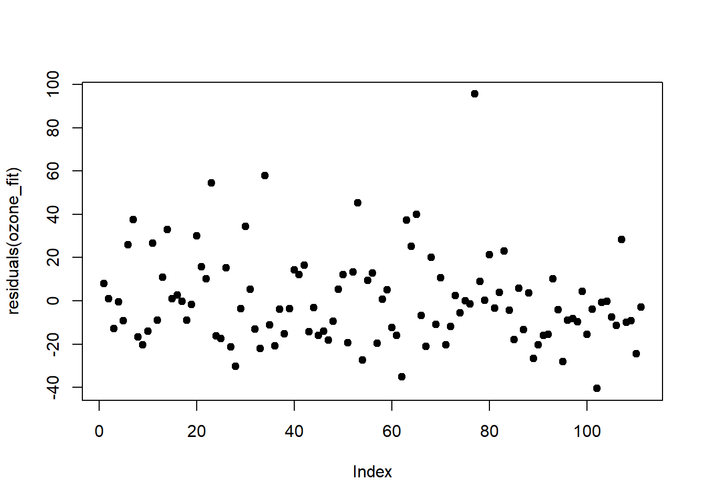


The residuals are heteroscedastic and right-skewed, which is something we might be able to fix by log-transforming the response. This is something to try in any case when the response varies over orders of magnitude (Gelman, Hill, and Vehtari 2020).
# add log-transform of ozone to data.frame
ozone_std$log_ozone <- log(ozone_std$ozone)
# fit
log_ozone_fit <- lm(log_ozone ~ rad+temp+wind, data = ozone_std)
summary(log_ozone_fit)##
## Call:
## lm(formula = log_ozone ~ rad + temp + wind, data = ozone_std)
##
## Residuals:
## Min 1Q Median 3Q Max
## -2.06212 -0.29968 -0.00223 0.30767 1.23572
##
## Coefficients:
## Estimate Std. Error t value Pr(>|t|)
## (Intercept) 3.41593 0.04826 70.775 < 2e-16 ***
## rad 0.22922 0.05074 4.518 1.62e-05 ***
## temp 0.46852 0.05800 8.078 1.07e-12 ***
## wind -0.21922 0.05589 -3.922 0.000155 ***
## ---
## Signif. codes: 0 '***' 0.001 '**' 0.01 '*' 0.05 '.' 0.1 ' ' 1
##
## Residual standard error: 0.5085 on 107 degrees of freedom
## Multiple R-squared: 0.6645, Adjusted R-squared: 0.6551
## F-statistic: 70.65 on 3 and 107 DF, p-value: < 2.2e-16Log-transforming ozone stabilised the predictors and also increased \(r^2\) by 0.05. The relationships of ozone to the three predictors has apparently turned more linear on the log-scale. The residuals, too, conform better to the assumptions, except for one outlier at the very low end:
plot(residuals(log_ozone_fit), pch = 19, type = 'p')
plot(fitted.values(log_ozone_fit), residuals(log_ozone_fit), pch = 19, type = 'p')
hist(residuals(log_ozone_fit))
qqnorm(residuals(log_ozone_fit))
qqline(residuals(log_ozone_fit)) 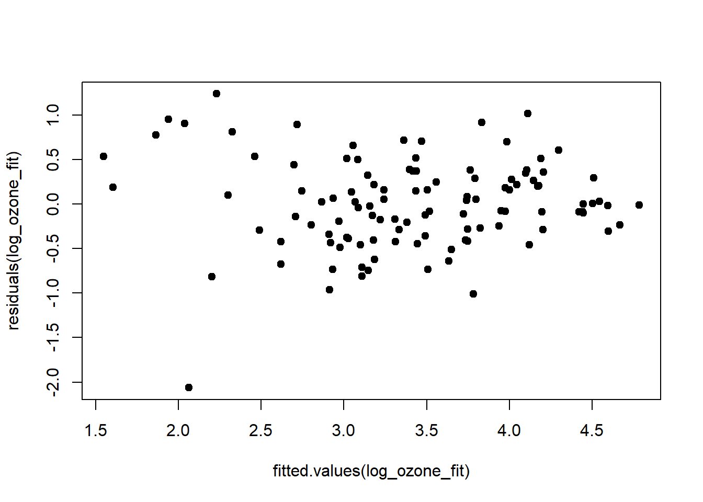
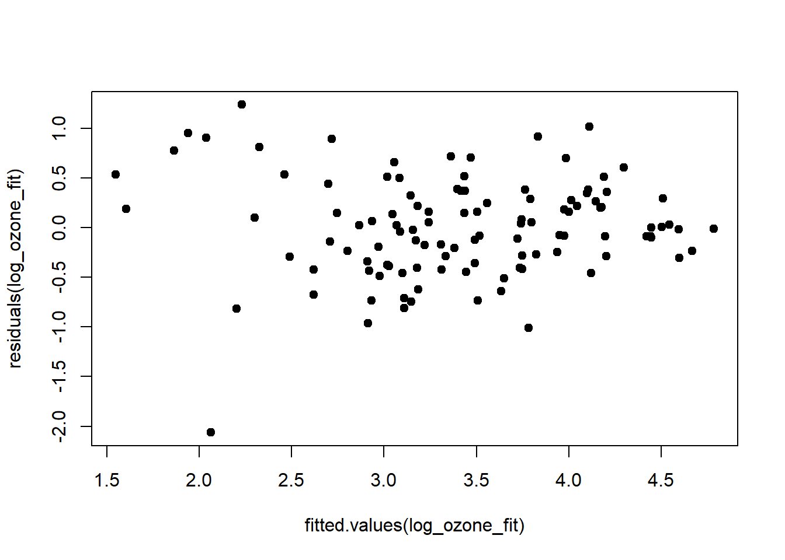

Finally, the AIC of the log-ozone model got a lot better compared to the ozone model (remember that a smaller AIC indicates a better model):
## [1] 998.6276## [1] 170.7949So we can proceed from this base model and see if adding interactions improves fit \(\left(r^2\right)\) and predictive performance (AIC). We start by adding the interaction of the largest effects (Gelman, Hill, and Vehtari 2020):
##
## Call:
## lm(formula = log_ozone ~ rad * temp + wind, data = ozone_std)
##
## Residuals:
## Min 1Q Median 3Q Max
## -2.18244 -0.30194 0.00665 0.31242 1.18972
##
## Coefficients:
## Estimate Std. Error t value Pr(>|t|)
## (Intercept) 3.40218 0.05061 67.229 < 2e-16 ***
## rad 0.25245 0.05682 4.443 2.19e-05 ***
## temp 0.46918 0.05805 8.082 1.10e-12 ***
## wind -0.21934 0.05594 -3.921 0.000157 ***
## rad:temp 0.04717 0.05179 0.911 0.364443
## ---
## Signif. codes: 0 '***' 0.001 '**' 0.01 '*' 0.05 '.' 0.1 ' ' 1
##
## Residual standard error: 0.5089 on 106 degrees of freedom
## Multiple R-squared: 0.6671, Adjusted R-squared: 0.6546
## F-statistic: 53.11 on 4 and 106 DF, p-value: < 2.2e-16## [1] 171.9295This interaction actually makes the predictive performance a little worse (greater AIC). Let’s try the next:
##
## Call:
## lm(formula = log_ozone ~ rad + temp * wind, data = ozone_std)
##
## Residuals:
## Min 1Q Median 3Q Max
## -1.98696 -0.32076 -0.05428 0.30238 1.19016
##
## Coefficients:
## Estimate Std. Error t value Pr(>|t|)
## (Intercept) 3.36697 0.05245 64.190 < 2e-16 ***
## rad 0.23644 0.04998 4.731 6.93e-06 ***
## temp 0.46806 0.05700 8.211 5.70e-13 ***
## wind -0.21984 0.05493 -4.002 0.000117 ***
## temp:wind -0.09938 0.04545 -2.187 0.030967 *
## ---
## Signif. codes: 0 '***' 0.001 '**' 0.01 '*' 0.05 '.' 0.1 ' ' 1
##
## Residual standard error: 0.4997 on 106 degrees of freedom
## Multiple R-squared: 0.679, Adjusted R-squared: 0.6669
## F-statistic: 56.05 on 4 and 106 DF, p-value: < 2.2e-16## [1] 167.8976Predictive performance is a little better than the base model (smaller AIC) and \(r^2\) increased by 0.02, even if the interaction comes out fairly uncertain. On to the last interaction:
##
## Call:
## lm(formula = log_ozone ~ rad * wind + temp, data = ozone_std)
##
## Residuals:
## Min 1Q Median 3Q Max
## -1.99855 -0.33075 -0.01627 0.26636 1.22283
##
## Coefficients:
## Estimate Std. Error t value Pr(>|t|)
## (Intercept) 3.40650 0.04837 70.423 < 2e-16 ***
## rad 0.25227 0.05267 4.790 5.45e-06 ***
## wind -0.21686 0.05558 -3.902 0.000168 ***
## temp 0.46830 0.05765 8.123 8.93e-13 ***
## rad:wind -0.07466 0.04915 -1.519 0.131751
## ---
## Signif. codes: 0 '***' 0.001 '**' 0.01 '*' 0.05 '.' 0.1 ' ' 1
##
## Residual standard error: 0.5054 on 106 degrees of freedom
## Multiple R-squared: 0.6717, Adjusted R-squared: 0.6593
## F-statistic: 54.21 on 4 and 106 DF, p-value: < 2.2e-16## [1] 170.4048This interaction is not estimated precisely and we only gain an improvement in \(r^2\) of 0.01 and a negligible gain in AIC. So I’m inclined to go with model 3 (all three predictors and “temp:wind” interaction). Due to the imprecision of the interaction parameter it doesn’t make sense to add more predictors at this stage. The residuals of model 3 still look ok:
plot(residuals(log_ozone_fit3), pch = 19, type = 'p')
plot(fitted.values(log_ozone_fit3), residuals(log_ozone_fit3), pch = 19, type = 'p')
hist(residuals(log_ozone_fit3))
qqnorm(residuals(log_ozone_fit3))
qqline(residuals(log_ozone_fit3))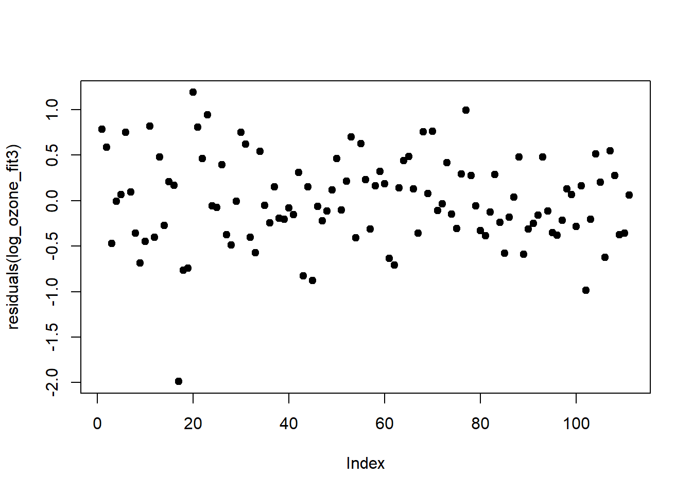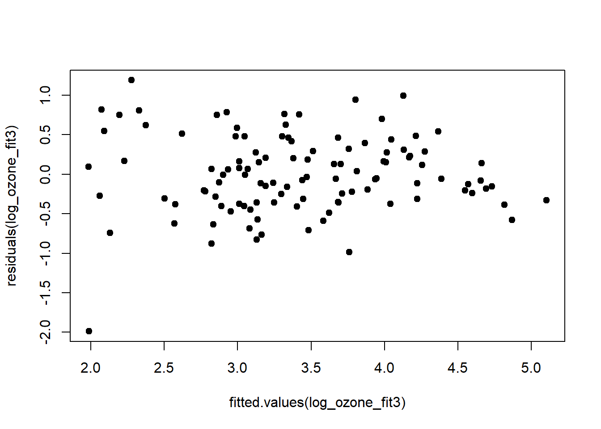

The model that we settled with is: \[\begin{equation} \log(ozone)=3.4+0.2\cdot rad_{std}+0.5\cdot temp_{std}-0.2\cdot wind_{std}-0.1\cdot temp_{std}\cdot wind_{std}+\epsilon \tag{5.2} \end{equation}\]
It explains 68% of the variation in ozone concentration (at the log-scale, judged by \(r^2\)) - which is pretty good - and tells us the following: The most important driver (of those we had data for) of ozone concentration is air temperature, followed by radiation intensity and wind speed. We get this from comparing the size of the parameters of the different predictors, which we can only do if predictors are standardised. Air temperature and radiation intensity increase ozone concentrations, while wind speed decreases it. The negative interaction of air temperature and wind speed tells us that the air temperature effects is down-regulated with increasing wind speeds.7 We can thus group Equation (5.2) as follows: \[\begin{equation} \log(ozone)=3.4+0.2\cdot rad_{std}+\left(0.5-0.1\cdot wind_{std}\right)\cdot temp_{std}-0.2\cdot wind_{std}+\epsilon \tag{5.3} \end{equation}\]
This is a useful way of understanding interactions, which we will revisit now in the last section.
5.5 Mixed continuous-categorical predictors
The special case of a mix of continuous and categorical predictors has got the special name of analysis of covariance (ANCOVA), though as we said before (chapter 4) it’s really just another variant of a linear model. For illustration we use an example from Gelman, Hill, and Vehtari (2020), modelling childrens’ IQ score by their mothers’ IQ score and whether or not the mothers have a high school degree (Figure 5.5).
# load IQ data from remote repository
iq <- read.csv("https://raw.githubusercontent.com/avehtari/ROS-Examples/master/KidIQ/data/kidiq.csv", header=TRUE)
# plot kid's IQ against mom's IQ
# with symbols differentiated by whether or not the mom has a high school degree
plot(iq$mom_iq, iq$kid_score, pch = c(1, 20)[iq$mom_hs+1],
col = c("black", "gray")[iq$mom_hs+1],
xlab = "Mom's IQ", ylab = "Kid's IQ")Figure 5.5: Childrens’ IQ score against their mothers’ IQ score, with symbol and shading indicating whether or not the mothers have a high school degree (open black dots: no high school degree; closed grey dots: highschool degree. Data from: Gelman, Hill, and Vehtari (2020)
We first centre the predictor “mom_iq” (the IQ score of the mothers) to make the corresponding parameter easier to interpret. Note, standardisation is not necessary here because there is no other continuous predictor to compare against, just a binary predictor.8 The binary predictor is “mom_hs”, with “1” indicating mother has a high school degree and “0” indicating mother hasn’t got one.
We then fit all model variants with and without interaction all at once and compare them via AIC. Normally we would do this step by step as in the previous example and check residuals at every stage. I skip this here and only check residuals at the end because I’m more interested in showcasing the different model variants and what they mean mathematically and mechanistically.
## Estimate Std. Error t value Pr(>|t|)
## (Intercept) 86.79724 0.9797444 88.59171 1.330993e-279## [1] 3852.576# fit common slope and intercept model
iq_fit1 <- lm(kid_score ~ mom_iq, data = iq_cen)
coef(summary(iq_fit1))## Estimate Std. Error t value Pr(>|t|)
## (Intercept) 86.7972350 0.87680195 98.99298 5.127032e-299
## mom_iq 0.6099746 0.05852092 10.42319 7.661950e-23## [1] 3757.216# fit individual Null models (2 intercepts)
iq_fit2 <- lm(kid_score ~ mom_hs, data = iq_cen)
coef(summary(iq_fit2))## Estimate Std. Error t value Pr(>|t|)
## (Intercept) 77.54839 2.058612 37.670231 1.392224e-138
## mom_hs 11.77126 2.322427 5.068516 5.956524e-07## [1] 3829.506# fit common slope model (2 intercepts)
iq_fit3 <- lm(kid_score ~ mom_iq+mom_hs, data = iq_cen)
coef(summary(iq_fit3))## Estimate Std. Error t value Pr(>|t|)
## (Intercept) 82.122143 1.94370047 42.250411 2.435765e-155
## mom_iq 0.563906 0.06057408 9.309362 6.609618e-19
## mom_hs 5.950117 2.21181218 2.690155 7.419327e-03## [1] 3751.989# fit common intercept model (2 slopes)
iq_fit4 <- lm(kid_score ~ mom_iq+mom_iq:mom_hs, data = iq_cen)
coef(summary(iq_fit4))## Estimate Std. Error t value Pr(>|t|)
## (Intercept) 87.7805823 0.8998447 97.550808 6.602618e-296
## mom_iq 1.0549920 0.1288807 8.185802 3.085494e-15
## mom_iq:mom_hs -0.5657798 0.1465785 -3.859909 1.307991e-04## [1] 3744.467## Estimate Std. Error t value Pr(>|t|)
## (Intercept) 85.4068999 2.2182219 38.50242 1.970160e-141
## mom_iq 0.9688892 0.1483437 6.53138 1.843084e-10
## mom_hs 2.8407569 2.4266700 1.17064 2.423919e-01
## mom_iq:mom_hs -0.4842747 0.1622171 -2.98535 2.994237e-03## [1] 3745.086The most complex model (#5) comes out on top here according to AIC. Its residuals look ok too:
plot(residuals(iq_fit5), pch = 19, type = 'p')
plot(fitted.values(iq_fit5), residuals(iq_fit5), pch = 19, type = 'p')
hist(residuals(iq_fit5))
qqnorm(residuals(iq_fit5))
qqline(residuals(iq_fit5))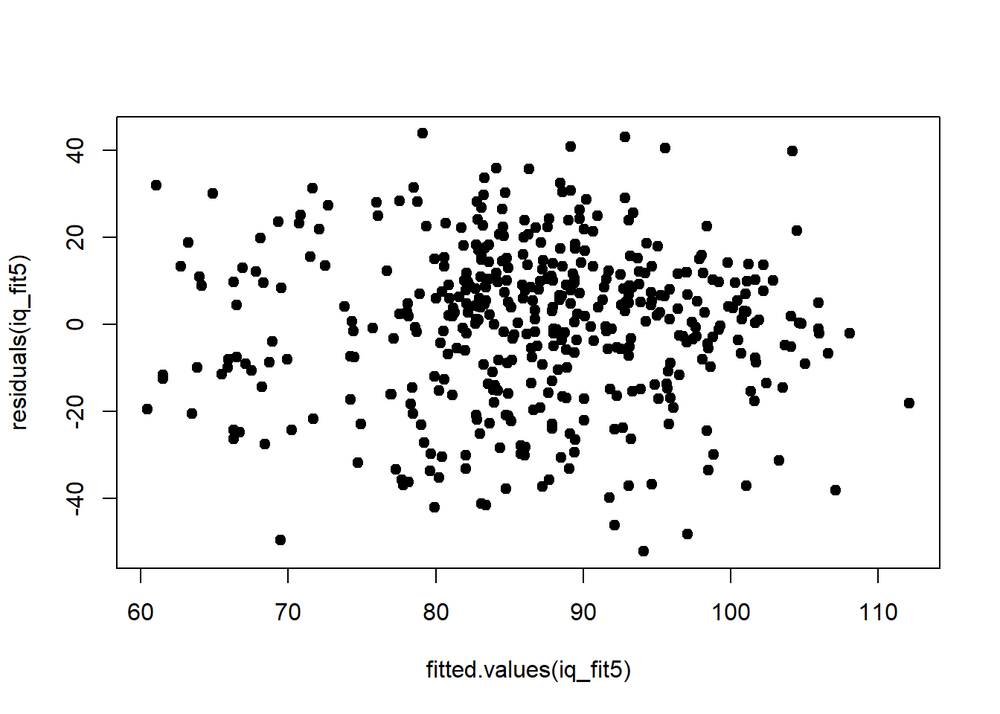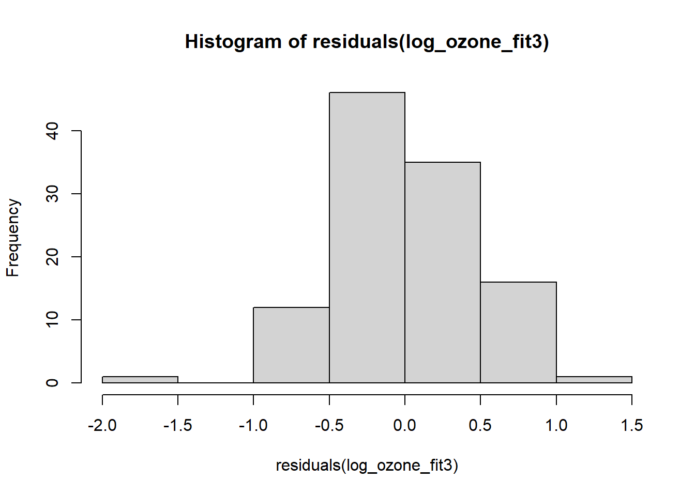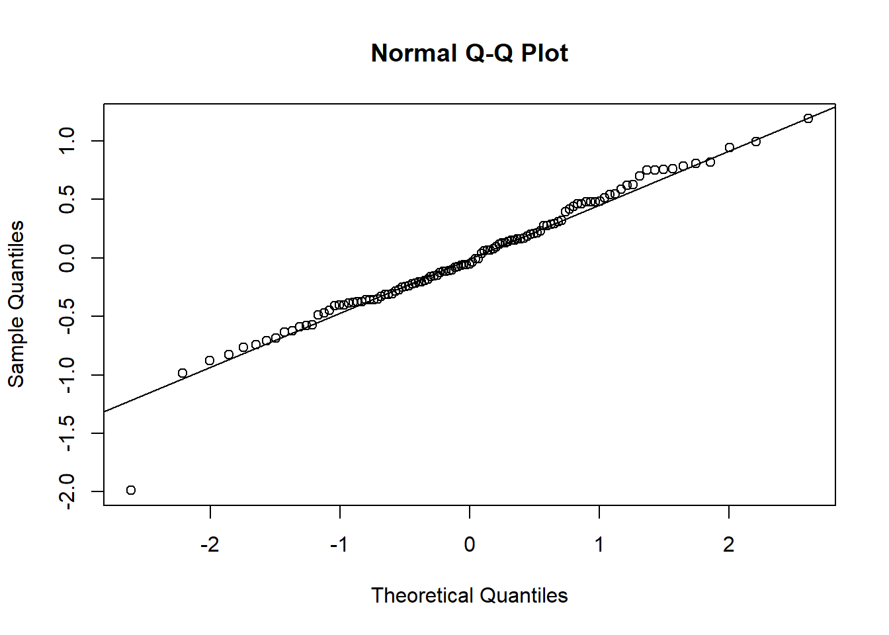
Let’s plot the six variants to look at the meaning of interactions once more (Figure 5.6).
# Null model
plot(iq_cen$mom_iq, iq_cen$kid_score, pch = c(1, 20)[iq_cen$mom_hs+1],
col = c("black", "gray")[iq_cen$mom_hs+1],
main ="Null model", xlab = "Mom's IQ (centred)", ylab = "Kid's IQ")
abline(h = coef(iq_fit0), lwd = 3, col = "black")
# common slope and intercept
plot(iq_cen$mom_iq, iq_cen$kid_score, pch = c(1, 20)[iq_cen$mom_hs+1],
col = c("black", "gray")[iq_cen$mom_hs+1],
main = "common slope and intercept", xlab = "Mom's IQ (centred)", ylab = "Kid's IQ")
abline(coef(iq_fit1), lwd = 3, col = "black")
# individual Null models
plot(iq_cen$mom_iq, iq_cen$kid_score, pch = c(1, 20)[iq_cen$mom_hs+1],
col = c("black", "gray")[iq_cen$mom_hs+1],
main = "individual Null models", xlab = "Mom's IQ (centred)", ylab = "Kid's IQ")
abline(h = coef(iq_fit2)[1], lwd = 3, col = "black")
abline(h = sum(coef(iq_fit2)), lwd = 3, col = "gray")
# common slope
plot(iq_cen$mom_iq, iq_cen$kid_score, pch = c(1, 20)[iq_cen$mom_hs+1],
col = c("black", "gray")[iq_cen$mom_hs+1],
main = "common slope", xlab = "Mom's IQ (centred)", ylab = "Kid's IQ")
abline(coef(iq_fit3)[c(1,2)], lwd = 3, col = "black")
abline(c(sum(coef(iq_fit3)[c(1,3)]),coef(iq_fit3)[2]), lwd = 3, col = "gray")
# common intercept
plot(iq_cen$mom_iq, iq_cen$kid_score, pch = c(1, 20)[iq_cen$mom_hs+1],
col = c("black", "gray")[iq_cen$mom_hs+1],
main = "common intercept", xlab = "Mom's IQ (centred)", ylab = "Kid's IQ")
abline(coef(iq_fit4)[c(1,2)], lwd = 3, col = "black")
abline(c(coef(iq_fit4)[1],sum(coef(iq_fit4)[c(2,3)])), lwd = 3, col = "gray")
# maximal model
plot(iq_cen$mom_iq, iq_cen$kid_score, pch = c(1, 20)[iq_cen$mom_hs+1],
col = c("black", "gray")[iq_cen$mom_hs+1],
main = "maximal model", xlab = "Mom's IQ (centred)", ylab = "Kid's IQ")
abline(coef(iq_fit5)[c(1,2)], lwd = 3, col = "black")
abline(c(sum(coef(iq_fit5)[c(1,3)]),sum(coef(iq_fit5)[c(2,4)])), lwd = 3, col = "gray") 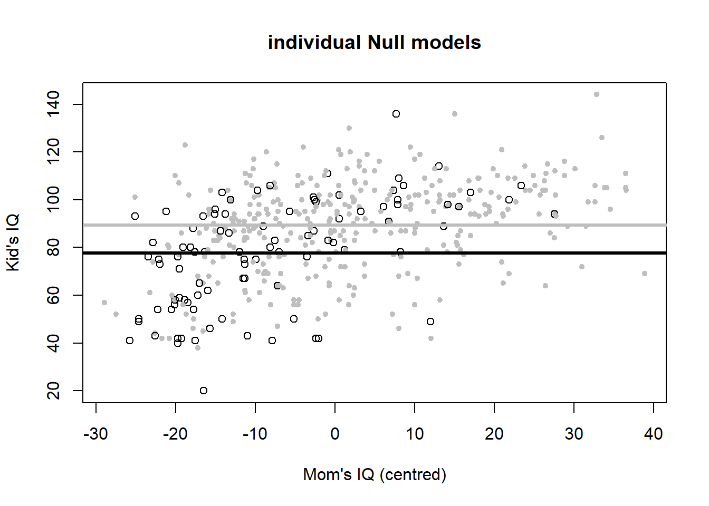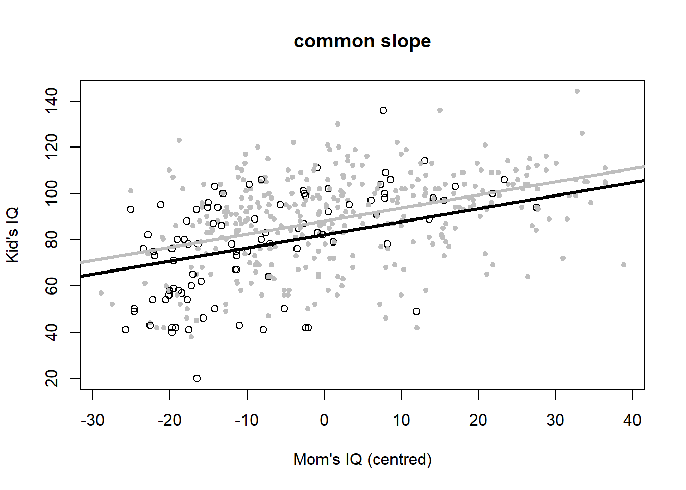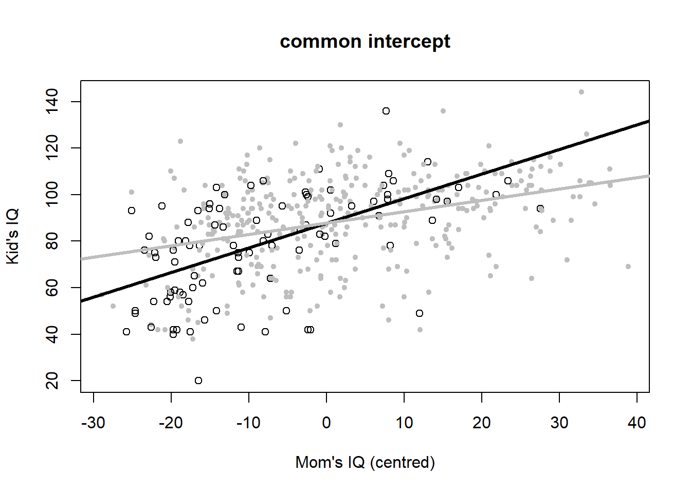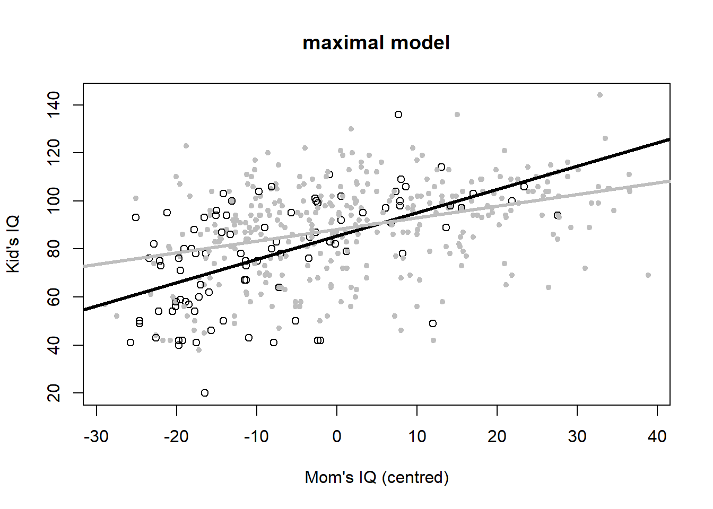
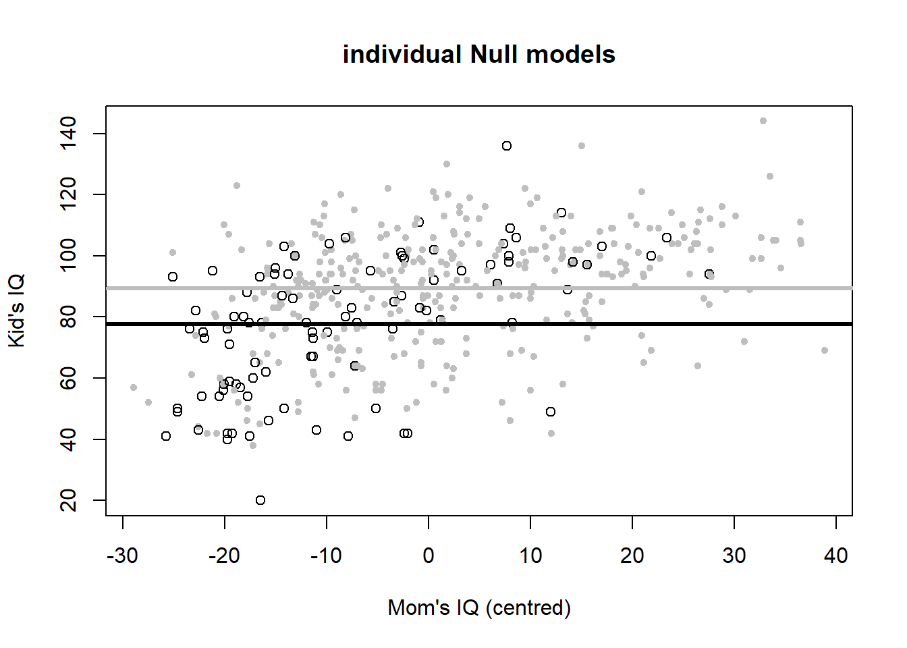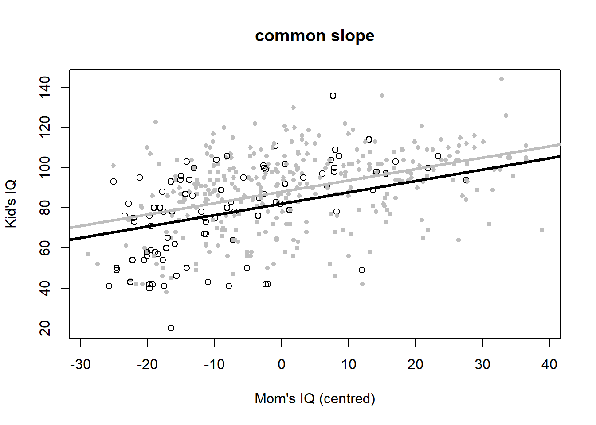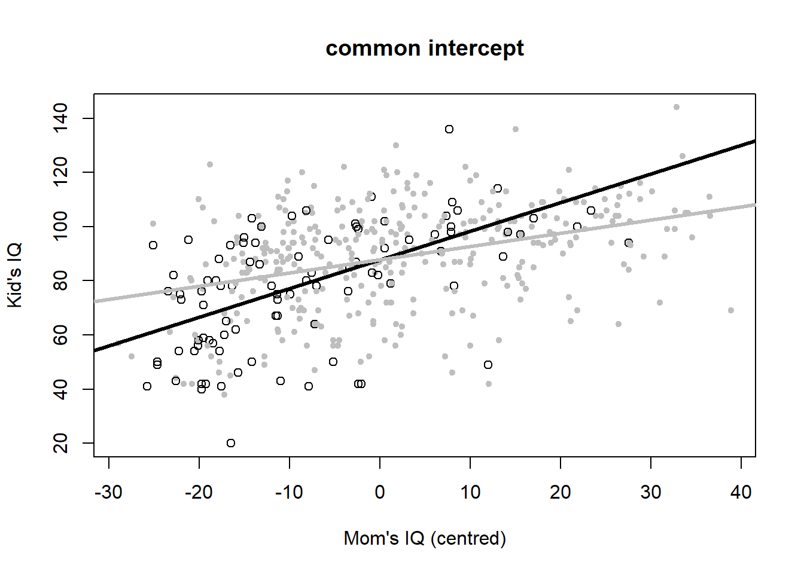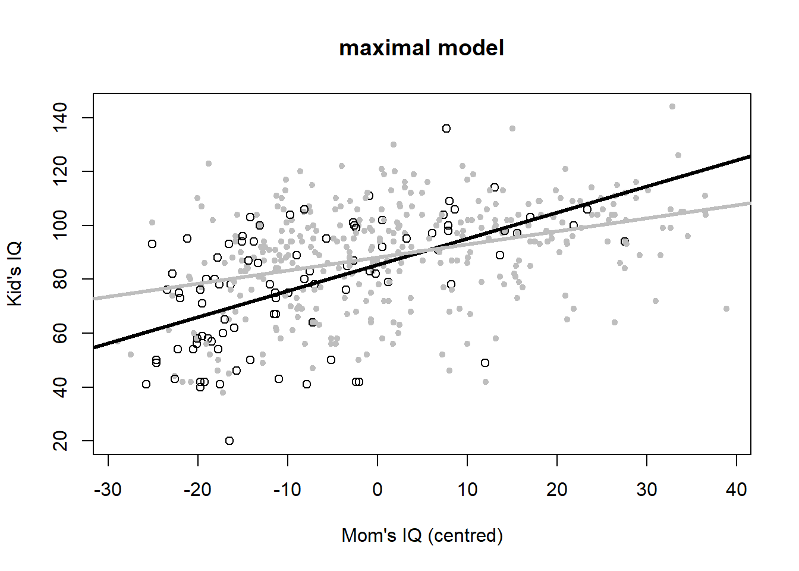
Figure 5.6: Six model variants for the IQ dataset. Open black dots and black lines: mother has no high school degree. Closed grey dots and grey lines: mother has a highschool degree. Data from: Gelman, Hill, and Vehtari (2020).
Mathematically, the Null model is: \[\begin{equation} IQ_{kid}=87+\epsilon \tag{5.4} \end{equation}\] I.e. the Null model is nothing more than the children’s mean IQ score, which is 87.
The common slope and intercept model is: \[\begin{equation} IQ_{kid}=87+0.6\cdot \left(IQ_{mom}-\hat{IQ}_{mom}\right)+\epsilon \tag{5.5} \end{equation}\] So when mother’s IQ score is at its average then the child’s IQ score is again the overall average, 87, but increases or decreases by 0.6 for every unit increase or decrease in mother’s IQ score.
The individual Null models formulation is: \[\begin{equation} IQ_{kid}=78+12\cdot hs_{mom}+\epsilon \tag{5.6} \end{equation}\] These are two different intercepts now, the mean children’s IQ score for mothers without a high school degree (when \(hs_{mom}=0\)), which is 78, and the mean children’s IQ score for mothers with a high school degree (when \(hs_{mom}=1\)), which is 78+12=90.
The common slope model is: \[\begin{equation} IQ_{kid}=82+6\cdot hs_{mom}+0.6\cdot \left(IQ_{mom}-\hat{IQ}_{mom}\right)+\epsilon \tag{5.7} \end{equation}\] This model assumes different mean children’s IQ scores for mothers with and without high school degree, but the same dependence on the mothers’ IQ score, which again comes out at 0.6.
The common intercept model now includes the interaction term, but not \(hs_{mom}\) as an individual predictor: \[\begin{equation} IQ_{kid}=88+1.1\cdot \left(IQ_{mom}-\hat{IQ}_{mom}\right)-0.6\cdot hs_{mom}\cdot \left(IQ_{mom}-\hat{IQ}_{mom}\right)+\epsilon \tag{5.8} \end{equation}\]
Regrouping leads to: \[\begin{equation} IQ_{kid}=88+\left(1.1-0.6\cdot hs_{mom}\right)\cdot \left(IQ_{mom}-\hat{IQ}_{mom}\right)+\epsilon \tag{5.9} \end{equation}\] According to this model we embark from a common intercept but then follow different slopes depending on mother’s high school degree. When mother has a high school degree, the child’s IQ increases by 1.1-0.6=0.5 for very unit increase in mother’s IQ. When mother has no high school degree, then mother’s IQ effect is stronger, increasing the child’s IQ by 1.1 for very unit increase in mother’s IQ.
Finally, the maximal model includes all predictors: \[\begin{equation} IQ_{kid}=85+3\cdot hs_{mom}+1.0\cdot \left(IQ_{mom}-\hat{IQ}_{mom}\right)-0.5\cdot hs_{mom}\cdot \left(IQ_{mom}-\hat{IQ}_{mom}\right)+\epsilon \tag{5.10} \end{equation}\]
Regrouping leads to: \[\begin{equation} IQ_{kid}=85+3\cdot hs_{mom}+\left(1.0-0.5\cdot hs_{mom}\right)\cdot \left(IQ_{mom}-mean\left(IQ_{mom}\right)\right)+\epsilon \tag{5.11} \end{equation}\] So positing two different average children’s IQ scores for mothers with and without high school degree, 88 and 85 respectively, and two different dependencies on mothers’ IQ score, 0.5 and 1.0 respectively. If we believe this model that turned out best according AIC, then there is a difference in average children’s IQ score depending on whether or not the children’s mothers have a high school degree (with high school degrees improving IQ scores by 3 units on average). What also matters is the mothers’ IQ score, with a positive relationship between mothers’ and children’s score. This relationship is stronger (mother’s IQ matters more) when mothers have no high school degree than when they have one.
5.6 General advise
Let’s finish with some general advise for building regression models, taken from Gelman, Hill, and Vehtari (2020):
- Include all predictors that we consider important for mechanistic reasons.
- Consider combining several predictors into a “total score” by averaging or summation (this is something we haven’t looked at so far).
- If predictors have large effects, consider including their interactions.
- Use standard errors to get a sense of uncertainties in parameter estimates.
- Decide upon including or excluding predictors based on a combination of contextual understanding, data, and the uses to which the regression will be put:
- If the parameter of a predictor is estimated precisely (small standard error), then it generally makes sense to keep it in the model as it should improve predictions.
- If the standard error of a parameter is large and there is no good mechanistic reason for the predictor to be included, then it can make sense to remove it, as this can allow the other model parameters to be estimated more stably and can even reduce prediction errors.
- If a predictor is important for the problem at hand, then Gelman, Hill, and Vehtari (2020) generally recommend keeping it in, even if the estimate has a large standard error and is not “statistically significant”. In such settings we must acknowledge the resulting uncertainty and perhaps try to reduce it, e.g. by gathering more data.
- If a coefficient doesn’t make sense, then we should try to understand how this could happen. If the standard error is large, the estimate could be explainable from random variation. If the standard error is small, it can make sense to put more effort into understanding the coefficient.
References
Crawley, M. J. 2012. The R Book (2nd Ed.). Chichester: John Wiley & Sons Ltd.
Gelman, A., J. Hill, and A. Vehtari. 2020. Regression and Other Stories. Cambridge: Cambridge University Press.
McElreath, R. 2020. Statistical Rethinking: A Bayesian Course with Examples in R and Stan (2nd Ed.). Boca Raton: CRC Press.
This is vividly portrayed in Umberto Eco’s book “The name of the rose”.↩︎
See chapter 6 for the alternative Bayesian statistical paradigm.↩︎
The answer can be found at the end of this script.↩︎
Under the Bayesian statistical paradigm, better choices are available; we will look at those in my Applied Statistical Modelling course in the summer term.↩︎
This just scales the log-likelihood so that a log-likelihood ratio of two competing models has an asymptotic sampling distribution, which is a Chi-squared distribution in this case (see, for example, McElreath (2020) and references therein).↩︎
This way round seems to make more sense mechanistically than air temperature regulating the wind speed effect, although mathematically both are equivalent.↩︎
We can also standardise binary predictors (see Gelman, Hill, and Vehtari (2020), for example), but in my mind this complicates interpretation. So I prefer to leave binary predictors on their original scale, at the expense of not being able to judge relative importance of predictors.↩︎